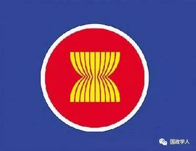

收录于合集

内容简介
【 作者 】罗圣荣：云南大学周边外交研究中心研究员; 云南大学国际关系研究院研究员，博士
李代霓：云南大学国际关系研究院研究生
【 来源 】《东南亚纵横》2019年第1期
摘要
2018年，随着全球力量变迁和不确定性因素日益增多，大国地缘博弈对东盟影响加大。加之面临愈加复杂的非传统和跨国安全威胁，东盟以“坚韧与创新”为主题，致力于建设一个更加灵活和创新的东盟共同体。以东盟为中心，深化对外合作，共同协调、综合性应对区域性和全球性挑战。展望2019，东盟将以“推动可持续发展”为主题，共同迎接数字化带来的前所未有的改变及挑战。在对外关系上，巩固以东盟为中心的区域结构，重点促进东盟与其对话伙伴之间的互联互通。
关键词： 东盟；2018年；2019年；东盟共同体

2018年，东盟以“坚韧与创新”为主题，积极应对传统和非传统安全威胁交织带来的区域性和全球性挑战，稳步推进东盟政治安全共同体、东盟经济共同体、东盟社会文化共同体建设。对外关系层面，重点强调“东盟—外部合作伙伴”行动计划和东盟共同体建设相结合的重要性，在以东盟为中心的区域架构基础上，积极拓展外部合作伙伴。2019年，国际秩序如何演化充满变数，面对日趋激烈的大国地缘博弈，东盟如何维护自身利益？东盟共同体建设又将面临怎样的机遇与挑战？
一、应对挑战，稳步推进东盟共同体建设
（一） 东盟政治安全共同体建设
东盟政治安全共同体建设的相关工作主要由东盟外长会议（AMM）、东盟国防部长会议（ADMM）、东盟法律部长会议（ALAWMM）、东盟地区论坛（ARF）、东盟跨国犯罪问题部长级会议（AMMTC）、东盟药物事务部长级会议（AMMD）、东南亚无核武器区委员会（SEANWFZ）、东盟政府间人权委员会（AICHR）等机构来展开。2018年，东盟致力于深化成员国之间的政治安全合作，共同应对传统安全和非传统安全问题，维护区域和平与安全。
在传统安全领域，东盟注重增强国家间政治互信、推动安全防务合作。政治层面，成员国发生的政权更迭、人权问题是对东盟政治安全共同体建设持续的考验。在过去的一年中，虽然部分成员国举行国家领导人选举，但东盟各国政局总体稳定。在5月9日的马来西亚大选中，反对党“希望联盟”（PH）在大选中获胜，终结了执政联盟“国民阵线”（BN）60年的执政历史。在7月29日举行的总统选举中，柬埔寨人民党赢得国民议会全数125个议席，获得连任。此外，泰国、印度尼西亚将于2019年进行大选。12月11日，泰国军人政府宣布解除政治活动禁令，所有政党可以进行竞选活动，宣传政纲。缅甸由于若开邦问题受到了部分西方国家的制裁，但国内局面总体稳定。作为2018年东盟轮值主席国，新加坡在轮值期间的目标基本实现，提升了其在东盟的地位。
在安全防务合作层面，深化与成员国及外部伙伴之间的防务合作。在对内防务合作方面，加强与成员国之间的军事合作。2006年成立的东盟国防部长会议（ADMM）是东盟最高防务机制，2018年10月19日，在第12届东盟国防部长会议上，东盟10国防长签署联合宣言，达成“以东盟为核心，加强成员国军事合作，维护区域和平”的共识。对外防务合作方面，提升与伙伴国家的防务合作水平。在第12届东盟防长扩大会议（ADMM PLUS）上，东盟10国与中、美、日、韩、澳等8国防长就维护区域安全进行讨论，发表《东盟防长扩大会关于建立务实信任措施的联合声明》《东盟防长扩大会关于反对恐怖主义威胁的联合声明》。另外，积极发展同伙伴国之间的海洋合作，维护海上安全。2018年10月，东盟与中国在湛江举行了首次联合军演，2019年东盟将与美国举行联合军演。
在非传统安全领域，2018年8月2日发布的《第51届东盟外长会议联合声明》，将打击恐怖主义、极端主义，应对跨国犯罪、网络犯罪等非传统威胁等作为2018年东盟政治安全共同体建设的重要内容。
重点打击恐怖主义和极端主义。随着外国恐怖分子的转移、回流与跨境流动，东南亚地区所面临恐怖主义威胁的规模和复杂性持续增加。2018年，东盟更加鼓励其成员国积极地打击恐怖主义和极端主义。2月8日发布的《东盟国防部长关于在东盟打击恐怖主义的联合声明》强调了区域反恐合作的重要性，主张加强东盟政治安全共同体和其它机制之间的跨部门反恐合作。5月，在印度尼西亚的泗水和北干巴鲁发生了恐怖袭击事件。东盟也愈加关注和重视恐怖主义、极端主义的预防和防范工作。在此背景下，10月，东盟在新加坡召开的东南亚反恐怖主义研讨会中通过了《东盟预防和应对激进极端主义和暴力极端主义的行动计划2018-2025》。
加大应对跨国犯罪的合作力度。2018年，东盟在共同应对跨国犯罪取得了明显进展。一方面，东盟国家以法律文本的形式确定了东盟国家打击跨国犯罪的共识。2018年3月26—28日，在曼谷举行的东盟高级法律官员会议（ASLOM）上最终确定了“东盟示范引渡条约”（MAET）。10月在老挝首都万象举行的第10届东盟法律部长会议（ALAWMM）批准了MAET的相关文本。第32届东盟首脑会议上宣布开始就东盟引渡条约开展工作，这将极大地增强东盟对抗跨国犯罪的能力。另一方面，东盟打击跨国犯罪的合作深化，10月29日至11月2日，第12届东盟跨国犯罪问题部长级会议（AMMTC）、东盟激进和第三届暴力极端主义崛起特别部长级会议（SAMMRRVE）在缅甸举行，重点强调加强东盟合作以应对日益严峻的跨国犯罪挑战。
重视网络安全。在数字经济化和东盟互联网连接激增的背景下，网络安全日益复杂化，东盟意识到应对网络威胁的紧迫性。2018年4月27日，在第32届东盟首脑会议上，达成《东盟领导人关于网络安全合作的声明》，将网络安全作为重点合作领域成为共识。同时，注重东盟网络安全能力提升。9月18日—20日，第三届东盟网络安全部长会议、东盟电信和信息技术部长会议在新加坡举行，东盟- 新加坡网络安全卓越中心和东盟—日本网络安全能力建设中心宣布建立。
（二） 东盟经济共同体建设
2017年，东盟国内生产总值（GDP）达到2.8万亿美元，增长率高达5.3%。2018年，受到中美贸易摩擦和全球经济形势的影响，东盟经济增长速度有所放缓。根据预测，2018年东盟地区的GDP增长率将为5.1%，较2017年下降0.2%。（具体国家详见表1）但是，根据亚洲开发银行（Asian Development Bank）的报告，尽管东南亚地区经济面临外部挑战，经济增长仍然较为稳定。
表1：东盟GDP增长率（%）（2016—2019）
全球
|
2016
|
2017
|
2018f
|
2019f
—|—|—|—|—
东盟
|
4.8
|
5.3
|
5.1
|
5.2
文莱
|
2.5
|
1.3
|
2.0
|
2.0
柬埔寨
|
6.9
|
7.0
|
7.0
|
7.0
印度尼西亚
|
5.0
|
5.1
|
5.2
|
5.3
老挝
|
7.0
|
6.9
|
6.6
|
6.9
马来西亚
|
4.2
|
5.9
|
5.0
|
4.8
缅甸
|
5.9
|
6.8
|
6.6
|
7.0
菲律宾
|
6.9
|
6.7
|
6.4
|
6.7
新加坡
|
2.4
|
3.6
|
3.1
|
2.9
泰国
|
3.3
|
3.9
|
4.5
|
4.3
越南
|
6.2
|
6.8
|
6.9
|
6.8
资料来源：ASEAN Secretariat (December 2018); Asian Development Bank (December2018); International Monetary Fund (October 2018).
2018年，东盟继续加快区域经济一体化进程，扩大成员国在经济层面的合作。在贸易紧张局势升级带来的不确定性以及技术进步带来的前所未有的变化背景下，结合“韧性与创新”主题，东盟经济共同体建设侧重于以下几个方面。
一是重点关注贸易便利化，深化服务业合作，创造有利的监管环境和投资环境。2017年东盟货物贸易总额达到25,740亿美元，比2016年增长15.0%。其中，服务贸易额达7,030亿美元，较2016年增长6.1%。2018年，东盟通过全面推行全国单一窗口（ASW），进一步提升东盟贸易便利化水平。除了5个东盟老成员国——印度尼西亚、马来西亚、新加坡、泰国、越南，文莱、柬埔寨、菲律宾在实施单一窗口方面也取得重要进展。1月份开始，实行单一窗口的成员国将在《东盟货物贸易协定》下交换电子表格。8月29日，第50届东盟部长经济会议（AEM）在新加坡举行，东盟经济部长签署修订《东盟货物贸易协定》（ATIGA）的第一项议定书，保证东盟服务提供商获得准入东盟市场的最广泛优惠。此外，创造更有利东盟投资环境。东盟作为世界第五大投资目的地，2017年东盟的外国直接投资（FDI）达到1370亿美元，较2016年增长11.6%，对服务业的外国直接投资占外国直接投资总额的65.8%，即900亿美元。在外国直接投资流入总额中，19.4%来自东盟内部，其次是欧盟（18.4%）、日本（9.6%）和中国（8.2%）。东盟逐步完成《东盟全面投资协定》（ACIA）的内置议程，减少投资限制和障碍，改善贸易规则，创造更有利的投资环境，提升东盟作为投资目的地的优势。
二是通过一系列关于电子商务和数字经济的关键举措，为数字时代做好准备。
加强电子商务应用，推动区域增长。2018年11月12日，东盟各国签署《东盟电子商务协议》，表明东盟关于促进电子商务发展承诺的落实，旨在增加东盟地区利用电子商务的信心，促进跨境电子商务贸易便利化。建立东盟数字数据治理框架，通过技术和创新提高东盟微型、小型和中型企业竞争力。12月18日，主题为“利用技术和创新促进中小企业发展”的第二届“东盟—中国企业家论坛”在柬埔寨举行。加强通讯信息合作，弥补东盟内部的数字鸿沟和信息通讯技术发展差距。12月5—6日，第18届东盟电信和信息技术部长会议（TELMIN）在印度尼西亚举行，会议批准《2019年东盟—日本信息通信技术工作计划》<2019年东盟—韩国信息通信技术工作计划》《 2019年东盟—欧盟ICT工作计划》《2019年东盟—欧盟ICT工作计划》，通过与伙伴国家的合作，缩小域内成员国之间的差距，推动东盟数字化经济发展。
三是深化东盟对外关系，促进与伙伴国的贸易。2018年，《区域全面经济伙伴关系协定》（RCEP）谈判取得实质性进展，3月3日，RCEP闭会期间部长级会议在新加坡举行，各国部长强调推动区域贸易谈判的重要性，以及RCEP协议在促进RCEP地区经济增长方面的潜力。11月14日，第二届RCEP峰会在新加坡举行，领导人集体共同承诺将迅速完成RCEP谈判，以建立一个开放、包容和基于规则的贸易体系。
（三） 东盟社会文化共同体建设
为促进东盟社会文化共同体建设，早日实现《2025年东盟社会文化共同体蓝图》，东盟重点增强其成员国对东盟的认同感，深化同成员国和对话伙伴在社会文化领域的合作。2018年3月22日，第19届东盟社会文化共同体理事会（ASCC）会议在新加坡举行。《第19届东盟社会文化共同体理事会联合声明》将青年发展、气候变化、预防文化、灾害管理、智慧城市、媒体建设等领域确定为2018年东盟社会文化共同体建设的优先领域。
关注青年发展，重点培育、投资青年。为实现东盟青年人口的能力和潜力，2018年，东盟启动3项措施来促进青年的教育和发展。一是重新启动新加坡—青年基金计划，在增加资助额度的同时，发展青年领袖、促进青年志愿服务和创业，鼓励青年参与东盟事务。二是引入东盟青年奖学金计划，为东盟青年领袖互动提供平台。三是注重东盟青年互相交流。9月，举办电子竞技比赛，为东盟青年提供通过竞争和兴趣互相交流的机会。10月，第二届东盟青年宗教信仰营举办，促进不同文化、信仰背景东盟青年之间的交流与互相理解。
重视预防文化，丰富东盟认同。2018年10月24日，东盟文化艺术部长（AMCA）会议上通过了《关于通过预防文化以丰富东盟认同的日惹宣言》，设立东盟预防文化工作组，将预防文化制度化。同时，加强民间交流与合作以深化东盟认同，创造 “和平、包容、健康、和谐的东盟预防文化”。
加强灾害管理，减轻灾害风险。由于地理位置的特殊性，东南亚是世界上最易受灾害影响的地区。其一，应对气候变化。2018年11月13日，东盟第33届首脑峰会通过《东盟关于在气候行动和灾害日采用东盟青年的宣言》。7月10日召开特别东盟气候行动特别部长级会议（SAMCA），东盟十国承诺通过共享信息并且采取其他措施以充分有效地执行《巴黎协定》。其二，加强灾害预防和应急管理，进行人道主义援助。2018年，东南亚多处发生洪灾，地震等自然灾害。7月中旬至8月，热带风暴“山神”“贝碧嘉”给老挝带来大范围暴雨，阿速坡水库溃坝造成多人死亡。东南亚人道主义援助协调中心（AHA）对相关国家在救灾和人道主义援助方面给予支持。此外，深化与东盟对话伙伴，国际组织和其他合作伙伴及利益攸关方在灾害管理方面的合作，促进东盟在相关多边论坛灾害管理领域的领导和共同愿景。
注重媒体建设，提升东盟民众意识。2018年5月10日，第十四届东盟信息部长会议（AMRI）和“东盟10+3”信息部长会议召开，会议的目标是通过信息和媒体建立强大的东盟文化共同体。一方面打击假新闻，加强媒体人员能力建设。通过《减少假新闻有害影响的框架和联合声明》，制定了东盟成员国打击假新闻的合作战略；另一方面，提高民众“数字”素养，增强其东盟意识。确定“东盟数字扫盲”的核心价值观，在东盟内部通过“数字扫盲”，以提高东盟民众信息能力和新闻素养，更好地利用“数字化”给东盟带来的机遇。
打造智慧城市网络，2018年7月，首届东盟智慧城市会议在新加坡召开。会议强调了智慧城市在协调东盟内部，缩小发展差距，促进增长方面的重要作用，目前，26个东盟智慧试点城市已经确认，与外部伙伴的智慧城市合作初始项目已启动。
二、以东盟为中心，积极拓展外部合作伙伴
2018年，东盟重点强调“东盟—外部合作伙伴”行动计划和东盟共同体建设相结合的重要性。一方面，东盟主张建立开放、透明和包容的基于规则的区域架构。以东盟主导的机制为基础，包括中国—东盟自由贸易区，“东盟+3”合作框架，东亚峰会（EAS），东盟地区论坛（ARF）和东盟防长扩大会议（ADMM- Plus），有效地吸引关键合作伙伴，并建设性地回应共同关心的全球和地区问题。另一方面，在东盟共同体建设的背景下，积极加强同其对话伙伴的关系，进一步探索基于共同利益的外向型政策。
（一）东盟与中国关系
2018年是中国—东盟战略伙伴关系15周年，也是中国—东盟创新年。15年来，中国—东盟关系走过了不平凡的历程，目前，双方合作不断深化，战略内涵不断丰富，形成了全方位、多层次、宽领域的互利共赢合作格局。在过去的一年，中国—东盟的互联互通顺利推进，“一带一路”倡议与《2025年东盟愿景》深入对接，双方加强了政治安全、经贸、人文交流三大支柱领域的对接，中国—东盟关系进一步提质升级。
在政治安全领域，双方政治互信不断增强，防务安全合作不断深化。首先，政治互信增强，中国—东盟战略伙伴关系不断深入，2018年11月，第21次中国—东盟（10+1）领导人会议暨庆祝中国—东盟建立战略伙伴关系15周年纪念峰会在新加坡举行，会议通过《中国- 东盟战略伙伴关系2030年愿景》，为中国—东盟命运共同体的构建，以及双方关系长远发展擘画了宏伟蓝图。其次，防务安全合作增强，双方举行了中国—东盟海上联演，东盟十国均派员参加。中国—东盟海上联演分为两个阶段，第一阶段是桌面推演，8月2日至3日在新加坡樟宜海军基地举行。第二阶段是实兵演习，10月22在中国湛江开幕。中国—东盟“海上联演—2018”是中国—东盟双方之间的首次海上军事演习，对于加强海上安全合作，提高共同应对安全威胁能力，促进中国—东盟军事关系，提升双方互信水平意义重大。再次，南海问题取得重要进展，处理南海主权争端是新加坡作为主席国的主要目标之一，2018年，中国与东盟的 “南海行为准则”（COC）磋商取得重要进展，双方达成“南海行为准则”单一磋商文本草案。
在经济合作领域，中国—东盟贸易规模提升。2017年中国—东盟贸易额达5148亿美元，同比增长13.8%,中国已连续9年成为东盟第一大贸易伙伴。2018年1—5月，中国—东盟贸易额同比增长18.9%，达到2326.4亿美元，双方累计双向投资总额已超过2000亿美元。中国成为东盟第三大外国直接投资（FDI）来源国。来自中国的外商直接投资（FDI）在 2017 年超过 112 亿美元，较2015 年增长超过 80%。中国在东盟设立直接投资企业4000余家，雇佣当地员工30余万人。此外，2018是中国—东盟创新年，11月16日，双方联合发表《中国—东盟科技创新合作联合声明》探讨建立科技创新合作新机制，共建科技园区，深化落实中国—东盟科技伙伴计划。中国支持东盟智慧城市网络建设，目前，中国南宁、厦门、杭州、济南、昆明与东盟城市已建立伙伴城市关系。
在人文交流领域，丰富的人文交流项目为中国—东盟合作奠定基础。当前，中国—东盟文化合作人才培养支持体系业已建成，作为以教育合作为主体的人文交流重要平台，“中国—东盟教育交流周”已经连续举办11届。2018年7月25—30日，主题为“教育合作新起点人文交流新未来”的第十一届“中国—东盟教育交流周”在贵州举办。在教育合作为主的基础上，教育交流周将交流内容拓展到科技、文化、体育、卫生等人文领域。11月14日，李克强总理在第21次中国－东盟领导人会议上的讲话指出：“为加强民众对双方合作的了解和参与，支持中国—东盟开展更多人文交流项目。”2019年是中国—东盟媒体交流年，中国将向中国—东盟合作基金增资，设立中国—东盟菁英奖学金，开展“未来之桥”中国－东盟青年领导人千人研修计划。
（二）东盟与美国关系
2018年，美国继续支持和积极参与东盟主导的东亚峰会、东盟地区论坛、东盟国防部长扩大会议等机制，东盟与美国在各个领域展开合作。在政治安全层面，美国注重对东盟的区域性安全承诺。8月4日，美国国务卿迈克·蓬佩奥在第51届东盟外长会议上宣布，将新增近3亿美元的资金用于增强与东盟的安全合作，涉及海事安全、人道主义援助、维和能力建设，打击跨国威胁等多个领域。11月15日，第六届东盟—美国（美国）首脑会议于在新加坡举行，双方重申了东盟—美国战略伙伴关系，以及加强在打击恐怖主义、极端主义等非传统威胁领域的合作，共同维持和促进东南亚地区的和平、安全与稳定。同时，签署《东盟—美国领导领导人关于网络安全的声明》，双方达成扩大在网络安全领域合作的共识，包括促进东盟网络能力建设，共同打击网络犯罪等。在经济层面，美国是东盟的第三大贸易伙伴，2017年东盟—美国双向贸易额达2352亿美元，美国到东盟的外国直接投资（FDI）总额达54亿美元。2018年9月1日，东盟经济部长（AEM）与美国贸易代表（USTR）在新加坡进行了磋商，东盟肯定了美国国际开发署在US- ACTI计划支持下东盟单一窗口和贸易便利化取得的进展，美国表示将继续为东盟提供技术援助，促进东盟包容性经济增长。另外，美国—东盟实习计划于2018年6月启动，该计划将为六个国家的青年提供在美国实习的机会。
（三）东盟与日本关系
日本是东盟的第四大贸易伙伴和第二大外资来源，2018年是东盟与日本建交45周年，双方战略伙伴关系不断深化。6月13日，第33届东盟—日本论坛在东京举行，双方对于加强东盟与日本的合作及战略伙伴关系进行了讨论。11月14日，第21届东盟—日本首脑会议在新加坡召开，双方通过了《第21次东盟—日本峰会联合声明》以纪念东盟—日本友好合作45周年，同时肯定了双方通过落实《东盟—日本友好合作愿景声明》（修订版）取得的成果。此外，双方一致同意扩大东盟—日本合作范围。除了在防务合作、经济合作等传统领域展开合作外，2019年，双方将加强在应对恐怖主义、极端主义，网络安全等非传统威胁，以及电子商务、数字经济、智慧城市等新兴领域的合作。
（四）东盟—东亚合作
东盟与中日韩“10+3”（APT）在维护和加强东亚和平、安全、稳定和发展方面具有重要的作用。2018年，东盟与中国、日本、韩国继续加强政治安全对话，维护地区和平与安全，同时致力于促进经济一体化，实现区域互利共赢。5月4日，东盟与中日韩“10+3”财政部长和央行部长会议在菲律宾举行，与会各方重申致力于建立一个开放的、以规则为基础的多边贸易和投资框架，并表示将加强合作，以确保区域经济和金融稳定。11月15日，第二十一届东盟与中日韩“10+3”峰会在新加坡举行，“10+3”将继续支持《2025年东盟经济共同体蓝图》的实施，以实现东亚更深层次的区域一体化。与会各方肯定了《2018—2022东盟与中日韩“10+3”合作工作计划》的实施进展，并同意加强政治与安全对话和合作，解决网络犯罪、非法贩毒等非传统安全问题。同时，明确了三方合作在增进政治互信，促进东亚地区经济和社会文化的发展方面的重要贡献。
(五） 东盟—欧盟合作
东盟与欧盟在各自经济一体化进程中都取得了很大的进展，双方之间存在着独特的关系以及多方面的联系，2018年，东盟—欧盟共同致力于进一步深化双方关系。欧盟是东盟的第二大贸易伙伴，2017年，东盟与欧盟的双边贸易额达到2268亿，欧盟也是东盟最大的外国投资来源，欧盟投资占东盟外国直接投资流入总额18.4%，投资金额超过248亿美元。2018年3月2日，东盟经济部长（AEM）和欧盟（EU）贸易专员于在新加坡举行了第十六次AEM—EU贸易委员会磋商会议，双方在贸易便利化、海关整合等方面取得进展，一致认为“东盟—欧盟贸易投资工作计划”有利于加强两个地区的经济联系。同日，双方还召开了第六届东盟—欧盟商业峰会，就商业贸易、企业管理等问题进行协商。10月19日，东盟—欧盟领导人会议在比利时举行，东盟表示了将双方关系提升为战略伙伴关系的意愿。双方同意探讨恢复东盟—欧盟自由贸易协定，并期待缔结《东盟—欧盟全面航空运输协定》。2019年1月21日，双方将举行第22届东盟—欧盟部长级会议，加强在网络安全、气候变化和可持续发展领域的合作。
（六）东盟与其他国家的合作
2018年，东盟还与俄罗斯、澳大利亚、印度、新西兰、加拿大等对话伙伴深化了在政治安全、经济、社会人文等多个领域的合作。3月18日，东盟与澳大利亚在悉尼召开了东盟—澳大利亚特别峰会，联合发布了《悉尼声明》，签署《东盟同澳大利亚联合打击国际恐怖主义谅解备忘录》。同时达成深化东盟—澳大利亚经济一体化的共识。2018是印度与东盟对话伙伴关系25周年，建立高层互动15周年，战略伙伴关系5周年。1月25日，双方在新德里成功召开东盟—印度峰会，印度表示希望提升与东盟的合作水平。11月15日，东盟—印度领导人非正式早餐会召开，双方一致同意继续加强全面合作关系，尤其是在经贸、投资等互利领域的合作。
三、展望2019，挑战与机遇并存
随着东盟共同体建设进入新阶段，东盟的发展也充满着不确定性。当前，世界形势中的不稳定性和不确定性因素日益增多，从第四次工业革命的颠覆性技术到大国之间日益激烈的竞争，从气候变化和跨国犯罪的全球挑战到对地区主义和多边主义的信任危机，变革和不确定性都将给2019年的东盟带来巨大挑战。
基于此，展望2019年，泰国作为东盟轮值主席国，以“推动可持续发展”主题，希望通过加强自身内部，外部伙伴和国际社会的伙伴关系，运用国内、双边、区域和全球领域之间的联系加强协同作用应对挑战，维护各方面的可持续性发展。以“创造性、互补性、连续性”为原则，对内，运用数字化带来的机遇为域内问题提供解决方案，促进东盟意识、扩大成员国之间更为紧密的合作，继续推动东盟政治安全共同体、经济共同体、社会文化共同体建设。对外，在以东盟为中心（ASEAN Centrality）区域架构的基础上，加强与对话伙伴的互联互通，注重《2025年东盟共同愿景》《2025年东盟互联互通总体规划》与对话伙伴战略之间的互补与对接。其中，对接中国“一带一路”倡议与《2025年东盟互联互通总体规划》是中国—东盟双方共同倡导的重点领域，2019年双方将继续加强在物理联通、机制对接、人文连接领域的互联互通，进一步提升中国—东盟战略伙伴关系。同时，东盟将注重保持其对内对外政策的连续性和一致性，实现东盟在各个领域的可持续性发展。
此外，2019年，《区域全面经济伙伴关系》（RCEP）的谈判进展和南海问题的走向值得关注。2018年底，RCEP谈判进入最后阶段，若谈判达成，将包括覆盖29%的世界外国直接投资量，使RCEP实现经济多元化，缓解未来大国经济摩擦的负面影响。在中国与东盟的共同努力下，2018年南海形势发生积极变化，相关各方同意在2019年完成单一磋商文本草案的审读。未来，中国与相关东盟国家将继续努力，在协商一致的基础上，继续推动“南海准则磋商”，共同致力于南海局势的稳定，维护东亚的和平与发展。
更多阅读
【地区秩序】阿米塔夫·阿查亚：权力转移还是范式变化？中国崛起与亚洲新兴安全秩序 | 国政学人
国政学人 （ID：guozhengxueren)
为方便学人及时阅读高质量文章
别忘把国政学人设置 星标 哦~